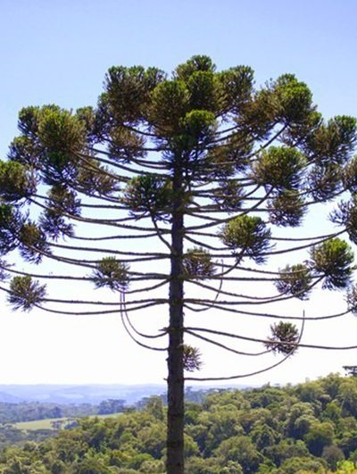
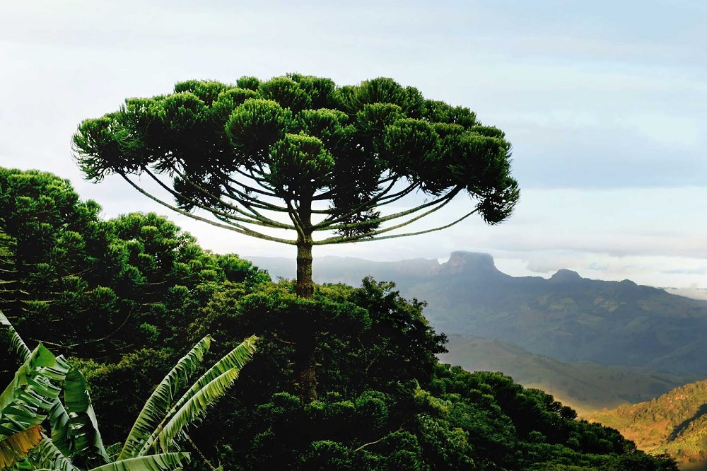
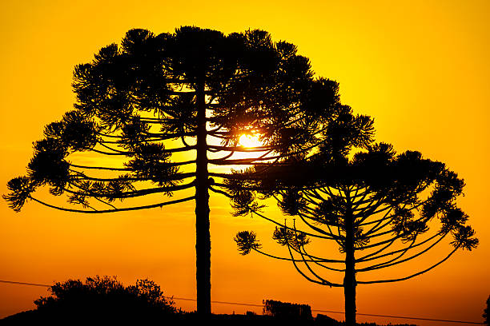

Sejam Bem Vindos Ao Meu Site
As araucárias são árvores muito importantes para a natureza e fazem parte da história e da cultura da Região Sul do Brasil. Elas pertencem à espécie Araucaria angustifolia, também conhecida como pinheiro-do-paraná, e são encontradas principalmente em áreas de clima mais frio. Além de sua beleza, essas árvores desempenham um papel fundamental na preservação da biodiversidade, servindo de abrigo e alimento para diversas espécies de animais. No entanto, devido ao desmatamento e à exploração excessiva, as araucárias estão ameaçadas de extinção, tornando sua conservação essencial para proteger esse importante patrimônio natural brasileiro.

Contexto histórico
A araucária (Araucaria angustifolia) é uma árvore nativa do Sul do Brasil que se desenvolveu principalmente em regiões de clima frio e úmido, especialmente nas áreas mais altas do Paraná. Ela formou a Floresta Ombrófila Mista, conhecida como Floresta com Araucárias, espalhando-se principalmente pelas regiões Centro-Sul, Sul e Campos Gerais do estado. A araucária teve grande importância para os povos que viviam no Paraná, principalmente por causa do pinhão, utilizado como alimento. Com a ocupação do território e a exploração da madeira, grande parte dessas florestas foi destruída. Atualmente, restam apenas fragmentos da vegetação original, tornando a preservação da araucária muito importante para o meio ambiente e para a história do Paraná.

Importância cultural
A araucária é um dos maiores símbolos do Paraná, representando a história, a cultura e a relação do povo paranaense com a natureza. A árvore está presente em tradições regionais, na culinária através do pinhão e na formação da paisagem do estado, sendo associada à identidade dos povos indígenas e das comunidades que vivem na região. Além disso, a araucária representa a preservação ambiental e a valorização do patrimônio natural do Paraná, pois suas florestas fazem parte da memória e da cultura local. Sua importância vai além da natureza, sendo um símbolo de pertencimento e orgulho para os paranaenses.
